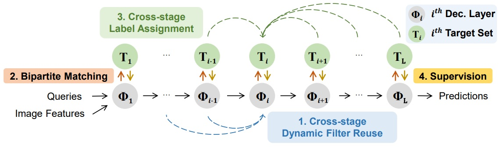
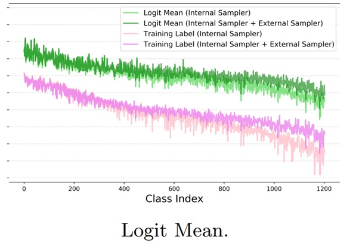
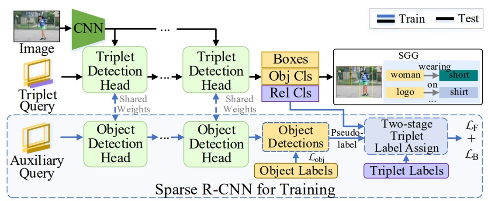
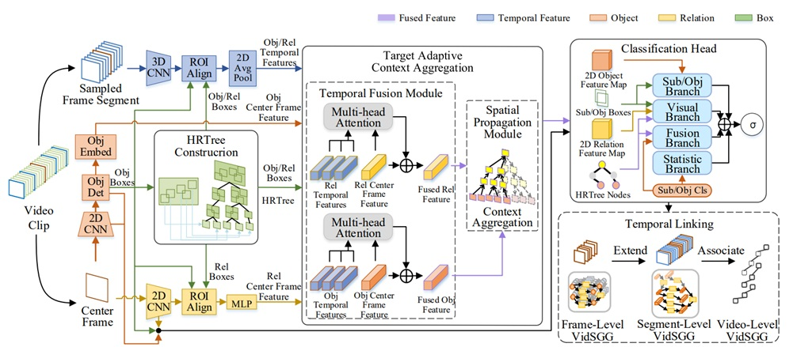

|
I am a first-year PHD student in The university of Hong Kong, supervised by Xihui Liu. |
 |
Drag-A-Video: Non-rigid Video Editing with Point-based Interaction |
StageInteractor: Query-based Object Detector with Cross-stage Interaction | |
 |
Logit Normalization for Long-tail Object Detection |
 |
Structured Sparse R-CNN for Direct Scene Graph Generation |
 |
Target Adaptive Context Aggregation for Video Scene Graph Generation |